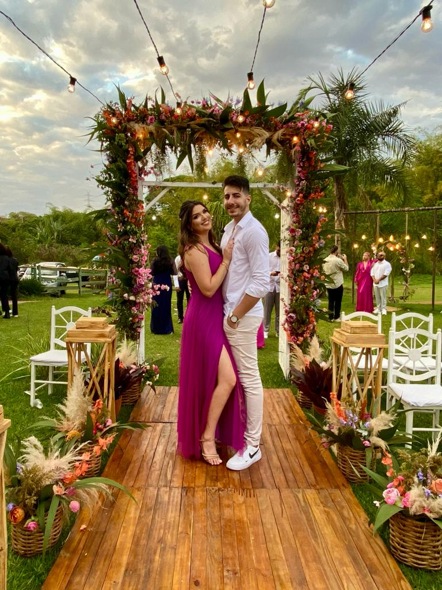

Lá estava eu, mexendo em alguns arquivos, quando me deparei com o primeiro código que criei para você. Foi na época em que eu estava começando a me aprofundar em programação e desenvolvimento. E então, quase como um sopro de inspiração, você entrou na minha vida, e eu pensei: por que não criar algo especial para surpreendê-la com um PEDIDO DE NAMORO? Foi assim que surgiu a ideia de criar um pequeno site para impressioná-la. Parecia algo simples, mas naquele momento, foi um desafio e tanto (risos). No final, deu tudo certo.
Além de todas as nossas fotos juntos e dos momentos que compartilhamos até agora, desde aquele primeiro passeio no parque, o nosso tour por Brasília,

Meus olhos não conseguiam deixar de notar cada detalhe seu. Meu coração parecia prestes a saltar do peito, transbordando de felicidade e amor por estar ao lado da pessoa que escolhi para compartilhar minha vida.
A cada dia, agradeço a Deus por tudo o que aconteceu e continua acontecendo na minha vida. E, é claro, em minhas preces, o seu nome nunca é esquecido. Agradeço por cada momento que vivemos juntos, peço paciência para lidar com essa pessoa que me estressa quase que diariamente. Mas, brincadeiras à parte, sou imensamente feliz por tê-la ao meu lado.
Quero continuar sendo essa pessoa especial para você, aquela que a acalma, a escuta e que tenta trazer alegria ao seu dia. Desde a academia até os seus estudos, estou sempre ao seu lado, te apoiando. Eu sei que enfrentamos desafios, mas lembre-se de que sempre estarei aqui para conversarmos sobre qualquer coisa. Enfim, obrigado por tudo. TE AMO!